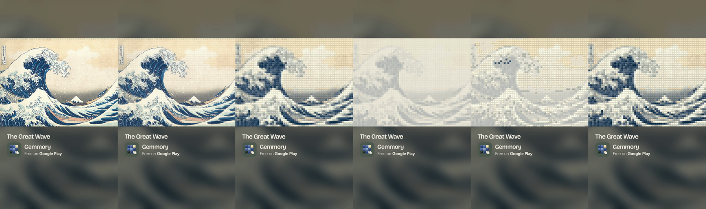
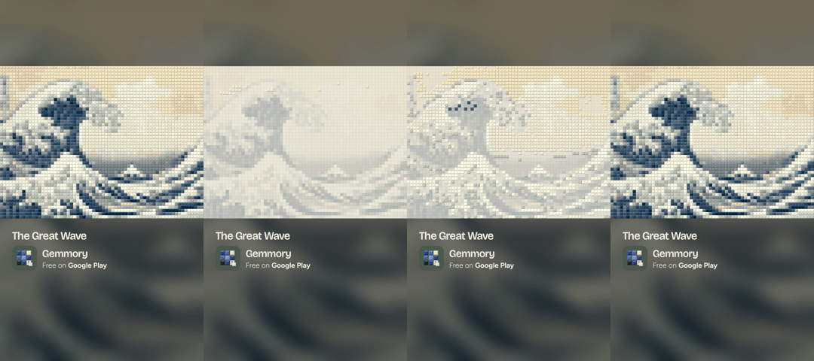

Mock re-timed from #144's real "The Great Wave" clip frames (C2 frame, safe area x 60-940, y 250-1440). The photo hook uses the bundled source photo as a stand-in for a player's photo. 210 frames at 30 fps: 0.5 s hook, hard cut to the tint grid, 5.5 s build, 1 s hold. No end card.

Frames 0 (photo), 8 (photo starting to dissolve), 14 (finished gems), 15 (hard cut to the tint grid), 97 (build at half), 209 (hold; loops to frame 0).

Frames 0 (finished), 15 (tint grid), 97 (half), 209 (hold). The last frame matches the first: the loop seam can't be seen.
Completion screen → Share (unchanged) → "Making your video…" (both files, ~40% longer)
→ Android chooser
TikTok · Instagram · YouTube → feed-7s.mp4 (EXTRA_REPLACEMENT_EXTRAS by package)
WhatsApp · Messages · Gmail … → 16.8 s T53 video + "Made with Gemmory: <Play link>"
VIP, progress shares, PNG fallback → unchanged (one file)